리눅스마스터-2급 (2014-06-14 기출문제)
1과목: 리눅스 운영 및 관리
1. Set-UID의 설명으로 틀린 것은?
- 보통 실행파일에 사용되며 Set-UID가 부여된 파일을 실행 시, 해당 파일을 실행하는 동안 실행시킨 사용자의 권한이 아닌 해당 파일의 소유자 권한으로 인식한다.
- 소유자 권한 부분의 x자리에 s로 표기된다.
- 디렉터리에 설정되는 특수 권한으로 일종의 공유 디렉터리로 사용된다.
- 실행 권한이 없는 파일에 부여하면 대문자 S로 나타난다.
(정답률: 69%)

2. 64비트의 기억 공간 제한을 없애고, 최대 1Exabyte의 디스크 볼륨과 16Terabyte의 파일을 지원하는 등 대형 파일 시스템과 관련된 기능이 대폭 강화된 파일 시스템으로 알맞은 것은?
- ext3
- ext4
- XFS
- vfat
(정답률: 75%)
3. /root 디렉토리의 총 사용량을 알아보기 위해 알맞은 명령어로 알맞은 것은?
- ls –ld /root
- df –sh /root
- df –i /root
- du –sh /root
(정답률: 77%)
4. /tmp 디렉토리의 경우 권한이 rwxrwxrwt로 설정이 되어 있다. 다음 중 /home 디렉토리를 기존 권한에 상관없이 /tmp와 동일한 권한으로 설정하는 명령으로 알맞은 것은?
- chmod 0777 /home
- chmod ugo+rwx /home
- chmod 1777 /home
- chmod ugo=rwx /home
(정답률: 66%)
5. 다음 중 /lost+found 디렉토리와 가장 관계가 깊은 명령어로 알맞은 것은?
- fdisk
- chmod
- last
- fsck
(정답률: 73%)
6. 다음 중 ISO 이미지 파일을 /mnt 디렉토리에 읽기 전용으로 마운트 하는 명령으로 알맞은 것은?
- mount –t iso9660 –o rw,loop /test.iso /mnt
- mount –t iso9660 –o rw,acl /test.iso /mnt
- mount –t iso9660 –o ro,loop /test.iso /mnt
- mount –t sr0 –o ro,loop /test.iso /mnt
(정답률: 81%)
7. /dev/sda1의 파티션을 생성하여 사용하려고 한다. 다음 중 나머지 셋과 다른 파일 시스템으로 생성 되는 파티션으로 알맞은 것은?
- mkfs.ext3 /dev/sda1
- mke2fs –t ext3 /dev/sda1
- mkfs /dev/sda1
- mke2fs –j /dev/sda1
(정답률: 74%)
8. 다음 중 fstab에 사용자 쿼터를 설정하기 위한 옵션으로 알맞은 것은?
- usrquota
- userquota
- setquota
- quotaon
(정답률: 70%)
9. 파일과 디렉토리를 생성하여 권한을 확인한 결과가 아래와 같다. 다음 괄호 안에 들어갈 내용으로 알맞은 것은?
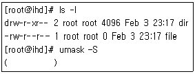
- 0113
- 0122
- u=rw,g=rx,o=rx
- u=rw,g=rx,o=r
(정답률: 64%)
10. /tmp 디렉토리에 test란 파일을 생성하려 하였으나, 에러가 발생되며 생성되지 않았다. 다음 중 추가로 원인을 파악하기 위한 명령어로 알맞은 것은?
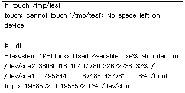
- df –i
- fdisk –l /dev/sda2
- eject /dev/sda2
- fdisk /dev/sda2
(정답률: 58%)
11. 아래와 같이 로그인 쉘을 변경하기 위해 괄호 안의 명령어로 알맞은 것은?
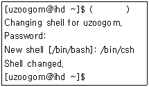
- /bin/csh
- echo $SHELL
- chsh
- csh
(정답률: 77%)
12. 히스토리 파일에 저장되는 명령어의 개수를 설정 하는 환경변수로 알맞은 것은?
- HISTSIZE
- HISTFILE
- HISTFILESIZE
- HISTNUM
(정답률: 79%)
13. /etc/profile 에 대한 설명으로 알맞은 것은?
- 개인 사용자의 환경설정과 시작프로그램 설정과 관련이 있는 파일로 로그인시 읽어 들인다.
- 시스템 전체(모든 사용자)에 적용되는 alias와 함수를 설정한다.
- 개인사용자가 로그아웃할 때 수행하는 설정을 지정하는 파일이다.
- 시스템 전체(모든 사용자)에 적용되는 환경 변수와 시작관련 프로그램을 설정한다.
(정답률: 61%)
14. 다음 ( 괄호 )에 해당하는 쉘로 알맞은 것은?
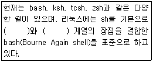
- ksh , tcsh
- ksh , csh
- zsh , tcsh
- zsh, csh
(정답률: 74%)
15. bash shell 의 주요 환경변수 중 틀린 것은?
- HOME：사용자의 홈 디렉토리
- LANG : 쉘 사용시 기본으로 지원되는 언어
- MAIL : 도착한 메일이 저장되는 경로
- TZ：서버의 타임존(timezone)
(정답률: 67%)
16. 다음 중 rm 명령어 사용시 삭제를 확인하는 메시지를 띄우려고 할 때 알맞은 것은?
- alias rm='rm -f'
- alias rm='rm -i'
- export rm='rm -f'
- export rm='rm –i’
(정답률: 72%)
17. 다음 중 bash에서 기존 PATH 설정에 /usr/java라는 새로운 경로를 추가하기 위한 명령어로 알맞은 것은?
- export PATH=/usr/java
- export $PATH=PATH:/usr/java
- export $PATH=$PATH:/usr/java
- export PATH=$PATH:/usr/java
(정답률: 76%)
18. 다음 중 bash shell에 내장되어 있는 내부명령어로 틀린 것은?
- alias
- cd
- export
- cat
(정답률: 53%)
19. 다음 중 프로세스(Process)에 관한 설명으로 틀린 것은?
- 실행 중인 프로그램을 프로세스라고 한다.
- 커널이 실행하는 init은 PID 번호가 2이다.
- init 프로세스는 모든 프로세스의 부모 프로세스(Parent Process)이다.
- 하나의 프로세스가 다른 프로세스를 실행하기 위한 시스템 호출 방법에는 fork와 exec가 있다.
(정답률: 80%)
20. 다음중 시그널(Signal)의종류와설명으로 알맞는것은?
- SIGHUP(HUP)은 키보드로부터 오는 인터럽트 시그널로 실행을 중지 시킨다. [CTRL] + [c] 입력 시에 보내지는 시그널이다.
- SIGINT(INT)은 가능한 정상 종료시키는 시그널로 kill 명령의 기본 시그널이다.
- SIGKILL(KILL)은 무조건 종료, 즉 프로세스를 강제로 종료시키는 시그널이다.
- SIGTERM(TERM)은 로그아웃과 같이 터미널에서 접속이 끊겼을 때 보내지는 시그널이다. 데몬 관련 환경 설정을 변경시키고 변화된 내용을 적용하기 위해 재시작할 때 이 시그널이 사용된다.
(정답률: 76%)
21. 다음 중 시그널(Signal) 이름과 시그널 번호가 알맞은 것은?
- SIGINT(INT)은 시그널 번호가 3이다.
- SIGTERM(TERM)은 시그널 번호가 9이다.
- SIGKILL(KILL)은 시그널 번호가 15이다.
- SIGHUP(HUP)는 시그널 번호가 1이다.
(정답률: 71%)
22. 동작 중인 프로세스의 상태를 실시간으로 화면에 출력해 주는 명령으로 프로세서의 상태뿐만 아니라 CPU, 메모리, 부하 상태 등도 확인 할 수 있는 명령어로 알맞은 것은?
- top
- pstree
- kill
- jobs
(정답률: 79%)
23. 다음 중 renice 명령어에 대한 설명으로 틀린 것은?
- 프로그램을 실행할 때 프로세스의 우선순위를 설정할 수 있는 명령어이다.
- 실행 중인 프로세스의 우선순위를 변경할 때 사용하는 명령으로 프로세스 ID(PID), 사용자 이름, 프로세스의 그룹ID(GID)를 이용한다.
- 실행 중인 프로세스의 NI 값에 상관없이 지정한 NI 값으로 바로 설정된다.
- NI 값을 낮추면 프로세스의 우선순위가 높아진다.
(정답률: 41%)
24. 다음은 crontab 설정에 대한 예이다. crontab 설정에 대한 설명으로 알맞은 것은?
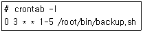
- 매일 같이 새벽 3시 정각에 /root/bin/backup.sh 프로그램을 실행한다.
- 매일 같이 오후 3시 정각에 /root/bin/backup.sh 프로그램을 실행한다.
- 매일 같이 오전과 오후 3시 정각에 /root/bin/backup.sh 프로그램을실행한다.
- 월요일부터 금요일까지 새벽 3시 정각에 /root/bin/backup.sh 프로그램을 실행한다.
(정답률: 87%)
25. 다음 중 프로세스 관련 명령어에 대한 설명으로 틀린 것은?
- lsof 명령어는 프로세스의 메모리 맵(Memory Map) 정보를 확인할 때 사용한다.
- jobs 명령어는 백그라운드로 실행 중인 프로세스나 현재 중지된 프로세스의 목록을 출력해 준다.
- top 명령어는 프로세스의 상태를 실시간으로 모니터링할 때 사용한다.
- pstree 명령어는 프로세스의 상태를 트리(Tree) 구조로 출력해 준다.
(정답률: 73%)
26. 다음 중 top 명령어 실행시 출력 내용으로 틀린 것은?
- 현재 시스템의 CPU 사용량
- 현재 시스템의 메모리 사용량
- 현재 시스템의 네트워크 사용량
- 현재 시스템의 스왑(SWAP) 사용량
(정답률: 68%)
27. 다음 중 top 명령어 실행 후 메모리 사용량(RES)에 따라 프로세스를 정렬하여 보여 주는 명령으로 알맞은 것은?
- P
- s
- h
- M
(정답률: 62%)
28. 다음 중 프로세스 생성 시 부여되는 식별번호로 알맞은 것은?
- PID
- PPID
- CMD
- TTY
(정답률: 84%)
29. 다음 ( 괄호 )안에 들어갈 편집기로 알맞은 것은?
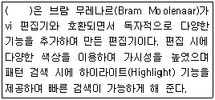
- nano
- pico
- emacs
- vim
(정답률: 80%)
30. 다음 중 vi 편집기 실행 시 명령 모드에서 입력 모드로 전환할 때 사용하는 키(key)로 옳지 않은 것은?
- w
- i
- a
- o
(정답률: 77%)
31. 사용자와 파일 권한 설정이 아래와 같다. 다음 중 vi로 편집중인 file.txt 파일을 강제적으로 저장하고 빠져 나올 때 사용하는 ex 모드 명령으로 알맞은 것은?
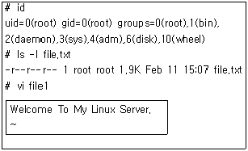
- :w!
- :wq!
- :wq
- :q!
(정답률: 80%)
32. 다음 중 vi 편집기에서 문서의 각 라인 번호를 표시해 주는 명령으로 알맞은 것은?
- :set nu
- :set nonu
- :set ai
- :set noai
(정답률: 84%)
33. 다음 중 pico 편집기에서 커서의 위치를 해당 줄의 끝으로 이동하는 조합으로 알맞은 것은?
- [Ctrl]+[x]
- [Ctrl]+[e]
- [Ctrl]+[p]
- [Ctrl]+[f]
(정답률: 68%)
34. 다음 중 vi 편집기에서 file.txt 파일을 편집 중 비정상 종료가 되었을 때 생기는 파일명으로 알맞은 것은?
- file.txt.swap
- file.txt.swp
- .file.txt.swap
- .file.txt.swp
(정답률: 58%)
35. 다음중( 괄호) 안에들어갈내용으로알맞은것은?
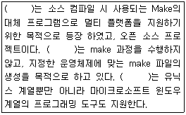
- tmake
- cmake
- amake
- kmake
(정답률: 79%)
36. 다음 중 deb 패키지의 이름 형식에 대한 설명으로 알맞는 것은?
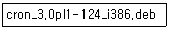
- cron : 패키지 이름
- 3.0pl1 : 패키지 릴리즈
- 124 : 패키지 아키텍처
- i386 : 패키지 버전
(정답률: 72%)
37. 다음 중 /backup 디렉토리를 backup.tar.gz 으로 압축하는 명령으로 알맞은 것은?
- tar -cvzf /backup backup.tar.gz
- tar -tvzf /backup backup.tar.gz
- tar -cvzf backup.tar.gz /backup
- tar -tvzf backup.tar.gz /backup
(정답률: 58%)
38. 다음 중 rpm 명령어를 사용하여 openssh 패키지가 설치되었는지 확인하는 명령어로 알맞은 것은?
- rpm -qa | grep openssh
- rpm -e | grep openssh
- rpm -Fvh openssh
- rpm -ivh | grep openssh
(정답률: 74%)
39. 다음중rpm 명령어 옵션에 대한 설명으로 알맞은 것은?
- rpm -i : 패키지를 설치한다.
- rpm -U : 패키지 정보를 확인한다.
- rpm -F : 패키지를 제거한다.
- rpm -e : 패키지를 검증한다.
(정답률: 71%)
40. 다음 중 ( 괄호 ) 안에 들어갈 내용으로 알맞은 것은?
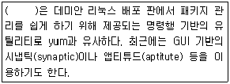
- get-dpk
- dpk-get
- get-apt
- apt-get
(정답률: 77%)
41. 다음 중 yum 사용 방법으로 틀린 것은?
- yum -y install telnet-server
- yum telnet-server
- yum list telnet-server
- yum search telnet-server
(정답률: 67%)
42. rpm 패키지 설치시에 의존성을 검사하지 않고 패키지를 설치하기 위해 사용하는 옵션으로 알맞은 것은?
- --query
- --verify
- --freshen
- --nodeps
(정답률: 84%)
43. 아래의 설명으로 알맞은 것은?
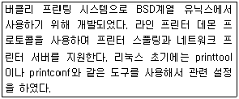
- LPRng
- CUPS
- FreeBSD
- sysV
(정답률: 72%)
44. 다음중 리눅스사운드드라이버의 유형으로틀린것은?
- OSS
- OSS/free
- ALSA
- SANE
(정답률: 73%)
45. 프린터 스풀(spool) 기본 디렉토리는 경로로 알맞은 것은?
- /var/spool/lpd/
- /var/log/spool/lpd/
- /etc/spool/lpd/
- /var/print/spool/lpd/
(정답률: 52%)
46. ALSA 사운드 장치를 초기화 하는 명령어로 알맞은 것은?
- alsactl init
- alsactl restore
- alsactl store
- alsactl reflash
(정답률: 54%)
47. alsactl 명령어의 옵션 중 –f를 적용하였을 때, 기본적으로 선택되는 환경 설정 파일로 알맞은 것은?
- /etc/sound.conf
- /etc/alsactl.state
- /etc/asound.state
- /etc/sound.state
(정답률: 40%)
48. lp –n 5 /etc/passwd 라는 명령어를 실행 하였을 때 해당되는 결과물로 알맞은 것은?
- /etc/passwd 파일의 내용이 모두 출력된다.
- /etc/passwd 파일의 내용 중 5번째 줄 이하만 출력된다.
- /etc/passwd 파일의 내용 중 5번째 줄 이상만 출력된다.
- /etc/passwd 파일의 내용이 모두 5장 출력된다.
(정답률: 65%)
2과목: 리눅스 활용
49. 다음 그림의 디스플레이 매니저로 알맞은 것은?
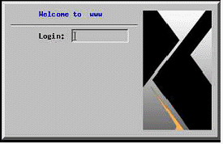
- XDM
- KDM
- GDM
- QDM
(정답률: 55%)
50. 다음 중 리눅스 부팅 시에 X 윈도를 실행하기 위해 설정하는 파일로 알맞은 것은?
- /etc/fstab
- /etc/xdm
- /etc/inittab
- /etc/xorg.conf
(정답률: 66%)
51. 다음 중 데스크톱 환경으로 틀린 것은?
- GNOME
- KDE
- XFce
- Mutter
(정답률: 65%)
52. 다음 중 GNOME에 대한 설명으로 틀린 것은?
- GTK+ 라이브러리를 기반으로 만들어졌다.
- GPL 라이선스만 따른다.
- GNU 프로젝트에 의해 만들어졌다.
- 대표적인 데스크톱 환경이다.
(정답률: 66%)
53. 다음 중 X 서버에서 X 클라이언트 허가를 위해 생성한 키 값을 확인할 때 사용하는 명령으로 알맞은 것은?
- xauth
- xhost
- xmodmap
- xwininfo
(정답률: 70%)
54. 다음 중 X 서버에서 접근 가능한 IP 주소 및 호스트명을 확인할 때 사용하는 명령으로 알맞은 것은?
- xauth
- xhost
- xmodmap
- xwininfo
(정답률: 76%)
55. 다음 중 PDF 문서를 볼 때 사용하는 프로그램으로 알맞은 것은?
- evince
- GIMP
- totem
- eog
(정답률: 63%)
56. 다음은 X 클라이언트 프로그램이 실행되는 창을 확인하는 명령이다. ( 괄호 )안에 들어갈 명령으로 알맞은 것은?
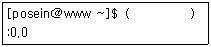
- echo DISPLAY
- echo $DISPLAY
- echo XTERM
- echo $XTERM
(정답률: 67%)
57. 다음 LAN 구성 방식 중 버스(Bus)형에 대한 설명으로 틀린 것은?
- 하나의 통신회선에 여러 컴퓨터를 연결해서 전송하는 방식이다.
- 연결되는 컴퓨터의 수에 따라 네트워크 성능이 좌우된다.
- 단말기의 추가 및 제거가 어렵지만 설치비용이 저렴하다.
- 신호 반사에 의한 상호 간섭을 막기 위해 종단에는 종단기(Terminator)가 필요하다.
(정답률: 67%)
58. 다음 중 100Mbps의 전송속도에 전송매체는 UTP-5 또는 STP를 사용하는 케이블로 알맞은 것은?
- 100BASE-2
- 100BASE-5
- 100BASE-TX
- 100BASE-FX
(정답률: 55%)
59. "전송 매체를 광섬유 케이블(Optical Fiber Cable)을 사용하여 설계된 링 구조의 통신망으로 네트워크 액세스를 제어하기 위해 토큰 패싱 방법을 사용한다. 1982년 10월에 미국표준협회의 X3T9.5 커미티에서 표준화되었고, ISO 규격으로 승인되었다." 다음 설명으로 알맞은 것은?
- Token Ring
- FDDI
- X.25
- Ethernet
(정답률: 45%)
60. 다음 중 이더넷 환경에서 다중 접속의 반송파 감지 및 충돌 탐지 방식을 뜻하는 용어로 알맞은 것은?
- CSMA/CA
- CSMA/CD
- FDDI
- DQDB
(정답률: 67%)
61. 다음 중 일반적인 이더넷 연결에 사용하는 T586B의 배열 순서로 알맞은 것은?
- 흰주, 주, 흰녹, 파, 흰파, 녹, 흰갈, 갈
- 흰주, 주, 흰녹, 녹, 흰파, 파, 흰갈, 갈
- 흰녹, 녹, 흰주, 파, 흰파, 주, 흰갈, 갈
- 흰녹, 녹, 흰파, 파, 흰주, 주, 흰갈, 갈
(정답률: 69%)
62. 다음 중 TCP/IP 관련 계층이 나머지 셋과 틀린 것은?
- IMAP
- DNS
- ICMP
- SSH
(정답률: 48%)
63. 다음( 괄호) 안에 들어갈 OSI 계층으로 알맞은 것은?
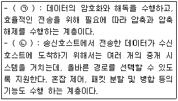
- (ㄱ)세션계층 (ㄴ)전송계층
- (ㄱ)세션계층 (ㄴ)네트워크 계층
- (ㄱ)표현계층 (ㄴ)네트워크 계층
- (ㄱ)표현계층 (ㄴ)전송계층
(정답률: 56%)
64. 다음 중 삼바(SAMBA)와 가장 관계가 깊은 프로토콜로 알맞은 것은?
- CIFS
- NFS
- IRC
- portmap
(정답률: 58%)
65. 다음 FTP에 대한 설명으로 틀린 것은?
- FTP 서버를 구축하기 위해서는 Proftpd나 Vsftpd 등을 설치해야 한다.
- 공개 소프트웨어를 제공하는 대부분의 FTP 서버에서는 anonymous라는 계정을 제공한다.
- FTP 서버에서는 21번 포트 하나만 열어두면 파일 전송이 가능하다.
- ftp라는 클라이언트 명령어를 사용해서 FTP 서버에 접속할 수 있다.
(정답률: 71%)
66. ssh 명령을 이용해서 IP주소가 192.168.12.22번인 ssh 서버를 접속하려고 한다. 다음 중 현재 계정인 posein이 아닌 yuloje 계정으로 변경하여 접속할 때 ( 괄호 )안에 들어갈 내용으로 알맞은 것은?
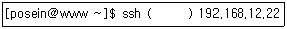
- -l yuloje
- -r yuloje
- -p yuloje
- -u yuloje
(정답률: 50%)
67. 다음 중 파일 전송 및 다운로드 진행상황을 ‘#’으로 확인하려고 할 때 사용하는 FTP 명령으로 알맞은 것은?
- bi
- sharp
- hash
- status
(정답률: 62%)
68. 다음 ( 괄호 ) 안에 들어갈 내용으로 알맞은 것은?
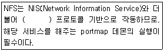
- IRC
- CIFS
- RPC
- imap
(정답률: 54%)
69. 다음 텔넷(Telnet)에 대한 설명으로 틀린 것은?
- 원격지에 있는 서버에 접속할 수 있는 서비스이다.
- 텔넷 서버에 접속하기 위해서는 계정이 반드시 있어야 한다.
- 텔넷의 포트 번호는 23번이다.
- 평문 전송을 하여 SSH보다 보안상 안전하다.
(정답률: 73%)
70. 다음 중 C 클래스 주소 대역에서 넷마스크값을 255.255.255.192로 설정했을 경우에 서브넷에 속한 전체 호스트의 개수로 알맞은 것은?
- 64
- 128
- 192
- 256
(정답률: 66%)
71. 다음 조건일 경우에 사용 가능한 호스트 IP 주소 개수로 알맞은 것은?
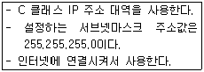
- 255
- 254
- 253
- 252
(정답률: 46%)
72. 다음 중 새로운 네트워크 주소 설정을 위해 기존의 네트워크 주소를 삭제하는 예제로 알맞은 것은?
- route del net 192.168.12.0 netmask 255.255.255.0
- route del -net 192.168.12.0 netmask 255.255.255.0
- route del default net 192.168.12.0 netmask 255.255.255.0
- route del default -net 192.168.12.0 netmask 255.255.255.0
(정답률: 41%)
73. 다음 상황과 가장 관계가 깊은 netstat 명령의 State값으로 알맞은 것은?
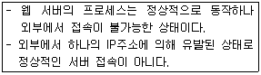
- SYS-SENT
- ESTABLISHED
- SYN_RECEIVED
- CLOSED
(정답률: 46%)
74. 다음 중 시스템에 설정되어 있는 게이트웨이 주소를 확인하는 명령으로 알맞은 것은?
- arp
- ifconfig
- ethtool
- netstat
(정답률: 50%)
75. 다음 정보를 출력하는 명령으로 알맞은 것은?
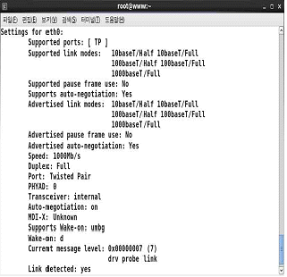
- arp
- ifconfig
- mii-tool
- ethtool
(정답률: 54%)
76. 다음 ( 괄호 ) 안에 들어갈 파일명으로 알맞은 것은?
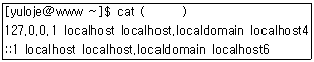
- /etc/hosts
- /etc/host.conf
- /etc/sysconfig/network
- /etc/resolv.conf
(정답률: 48%)
77. 다음에서 설명하는 클러스터링 기술로 알맞은 것은?
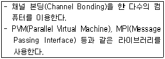
- 고계산용 클러스터
- 부하분산 클러스터
- 고가용성 클러스터
- 임베디드 클러스터
(정답률: 37%)
78. 다음 설명으로 알맞은 것은?
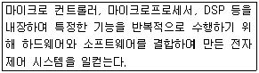
- 고계산용 클러스터
- 부하분산 클러스터
- 고가용성 클러스터
- 임베디드 시스템
(정답률: 64%)
79. 다음 빅데이터 관련 기술 중 분석된 데이터의 의미와 가치를 시각적으로 표현하기 위한 기술로 알맞은 것은?
- Hadoop
- R
- NoSQL
- HBase
(정답률: 46%)
80. 다음에서 설명하는 클라우드 서비스로 알맞은 것은?
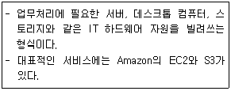
- IaaS
- SaaS
- PaaS
- DaaS
(정답률: 58%)